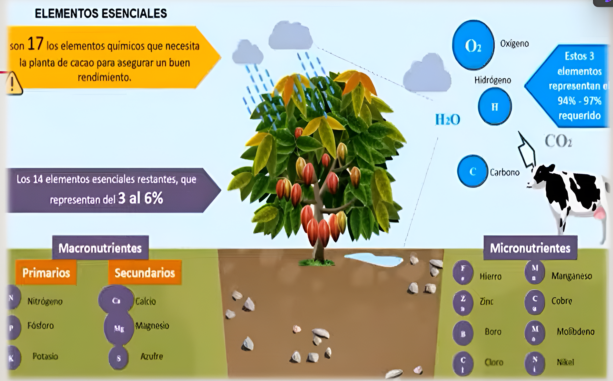
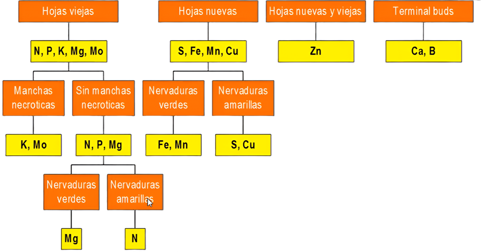

Elementos Esenciales y Procesos
Abonos Orgánicos: Elementos Esenciales y Procesos
Elementos Esenciales para las Plantas
Las plantas, como el cacao, necesitan 17 elementos químicos para un buen rendimiento.
- Elementos principales (94%-97% requeridos): Oxígeno (\(O_2\)), Carbono (\(CO_2\)), Hidrógeno (\(H_2O\)).
- Elementos esenciales restantes (3% al 6%):
- Macronutrientes:
- Primarios (NPK): Nitrógeno (N), Fósforo (P), Potasio (K).
- Secundarios (Ca, Mg, S): Calcio (Ca), Magnesio (Mg), Azufre (S).
- Micronutrientes (Fe, Mn, Zn, Cu, B, Mo, Cl, Ni): Hierro (Fe), Manganeso (Mn), Zinc (Zn), Cobre (Cu), Boro (B), Molibdeno (Mo), Cloro (Cl), Níquel (Ni).
- Macronutrientes:

Proceso de Transformación de Abonos Orgánicos
El proceso de conversión de materia orgánica en humus y luego en nutrientes disponibles para las plantas se divide en etapas clave:
- Materia Orgánica: Residuos orgánicos (estiércol, hojarascas, tallos, etc.).
- Humificación: Conjunto de procesos físicos, químicos y biológicos que transforman la materia orgánica en humus. Es un proceso rápido (3 a 4 meses) realizado por diversos organismos (lombrices, hongos, bacterias, actinomicetos) en diferentes condiciones ecológicas.
- Humus: Es el estado más avanzado en la descomposición de la materia orgánica. Es un compuesto coloidal de naturaleza ligno-proteica, responsable de mejorar las propiedades físico-químicas de los suelos.
- Proceso de Mineralización: Consiste en la transformación del humus en compuestos solubles asimilables por las plantas (ej. \(NO_3\), \(H_2PO_4\)). Es un proceso lento (1 año) que solo se realiza en condiciones ecológicas óptimas (18 a 22°C, buena humedad, oxígeno adecuado, pH 6.8) y por organismos altamente especializados.
Fuentes de Materia Orgánica para Abonos
Las fuentes son variadas y provienen de distintas actividades:
- Ganadera: Estiércoles, Orines, Pelos, Plumas, Huesos.
- Agrícola: Rastrojos de los cultivos, Residuos de podas de árboles, Residuos de malezas.
- Forestal: Aserrín, Hojas y ramas, Cenizas.
- Industrial: Pulpa de café, Bagazo de la caña de azúcar.
- Urbana: Basura doméstica, Aguas residuales y materias fecales.
Relación: Sustancia Seca y Humus Producido
| Sustancia Seca (Kg) | Humus Producido (Kg) |
|---|---|
| Estiércol: 5 000 | 1 500 |
| Residuos de Remolacha: 6 000 | 900 |
| Residuos de Maíz: 10 000 | 1 500 |
| Residuos de Trigo: 5 000 | 500 |
| Residuos de Girasol: 5 000 | 1 000 |
| Residuos de Sorgo: 7 000 | 700 |
| Residuos de Tabaco: 6 000 | 1 200 |
Cantidad de Estiércol y Orines Producidos por Animal por Día
| Clase de Animal | Estiércol Sólido (Kg) | Orines (L) |
|---|---|---|
| Vacuno | 20 a 30 | 10 a 15 |
| Caballo | 15 a 20 | 4 a 6 |
| Ovejas | 1.5 a 2.5 | 0.6 a 1.0 |
| Cerdos | 1.5 a 2.2 | 2.5 a 4.5 |
Composición Química de Abonos (Ejemplo)
| Abonos | Humedad (%) | Nitrógeno (%) | Fósforo (\(P_2O_5\)) (%) | Potasio (\(K_2O\)) (%) |
|---|---|---|---|---|
| Vaca | 75.20 | 1.67 | 1.08 | 0.56 |
| Caballo | 70.00 | 2.31 | 1.15 | 1.30 |
| Oveja | 45.00 | 3.81 | 1.63 | 1.25 |
| Llama | 62.00 | 3.93 | 1.32 | 1.34 |
| Vicuña | 65.00 | 3.62 | 2.00 | 1.31 |
| Alpaca | 63.00 | 3.60 | 1.12 | 1.29 |
| Cerdo | 80.00 | 3.73 | 4.52 | 2.89 |
| Gallina | 40.00 | 6.11 | 5.21 | 3.20 |
Resultados de Análisis de Abonos Orgánicos (Valores Promedio)
| Característica | Guano de Isla | Gallinaza | Est. Cabra | Turba Orgánica |
|---|---|---|---|---|
| pH | 7.60 | 7.60 | 7.70 | 4-5 |
| CE (mmhos/cm) | Variable | 8-9 | 9.60 | 0.65 |
| M Orgánica (%) | 47.60 | 10-12 | 16.00 | 28-30 |
| M. Seca (%) | 60-70 | 48 | 37 | 70-80 |
| Humedad (%) | 40-30 | 52 | 63 | 20-30 |
| Cenizas (%) | 12.80 | 10.60 | 8.20 | 6-8 |
| Nitrógeno Total (%) | 13-16 | 3-3.20 | 0.80 | 1.20-1.40 |
| Fósforo (%) | 6-8 | 4-5 | 0.35 | 0.30 |
| Potasio (%) | 2.20 | 2.7-3.0 | 0.22 | 0.15 |
| Calcio (%) | 6-7 | 1.60-2.00 | 0.56 | 0.13 |
| Magnesio (%) | 0.50 | 0.97 | 0.16 | 0.05 |
| Carbono (%) | 27.60 | 6-7 | 9.28 | 13-16 |
Objetivo de los Abonos Orgánicos
El uso de abonos orgánicos persigue una ¡MAYOR PRODUCTIVIDAD! y una producción más sostenible mediante:
- Menores pérdidas de nutrientes.
- Menor impacto sobre la materia orgánica estable del suelo.
- Mayor eficiencia en la nutrición vegetal.
- Mejora de la estructura del suelo, CIC (Capacidad de Intercambio Catiónico), retención de humedad, porosidad.
- Mejora el desarrollo de raíces.
- Propicia menor contaminación ambiental.
- Mejora el desarrollo de cultivos en condiciones adversas.
- Impacto positivo sobre la biología del suelo.
Componentes de una Recomendación de Fertilización
Para una recomendación completa, se deben considerar:
- Preguntas clave: Qué abonar?, Cuánto abonar?, Cuándo abonar?, Cómo abonar?
- Componentes de la solución: Dosis, Fuente, Método, Época.
- Factor adicional: Costo.
Factores para Determinar “Cuánto Abonar”
La cantidad de abono a aplicar está influenciada por:
- Las exigencias de la planta (especie y variedad).
- La etapa fenológica del cultivo.
- El nivel de producción deseado.
- Las propiedades del suelo.
- El manejo agrícola general.
Eficiencia de Nutrientes
La eficiencia de un fertilizante se refiere a la parte del producto aplicado que será realmente disponible para el cultivo y el porcentaje que se preserva de pérdidas.
- Fórmula: Fertilización Aplicada = Requisito de la planta + Aporte del suelo.
Rangos de Eficiencia de Nutrientes (%)
| Nutriente | F. Tradicional (%) | Fertirriego (%) |
|---|---|---|
| Nitrógeno | 15-50 | 50-80 |
| Fósforo | 5-30 | 30-40 |
| Potasio | 30-40 | 40-60 |
| Azufre | 20-50 | 50-80 |
| Calcio | 30-40 | 40-60 |
| Magnesio | 30-40 | 40-60 |
- Conclusión: El fertirriego ofrece una eficiencia de nutrientes significativamente mayor en comparación con la fertilización tradicional.
Definición de Fertilización (Basada en Análisis)
La fertilización precisa se basa en análisis de laboratorio del suelo y foliares para determinar el estado nutricional y las necesidades del cultivo.
- Análisis de Suelos: Permiten conocer la materia orgánica oxidable, nitrógeno total, fósforo disponible, potasio disponible, pH, conductividad eléctrica, y carbonato de calcio.
- Análisis Foliar: Informan sobre los niveles de macronutrientes (N, P, K, Mg, Ca, S) y micronutrientes (B, Mn, Zn, Cu, Cl) en las hojas.
- Gráficos de Monitoreo: Muestran la evolución de los niveles de nutrientes a lo largo del ciclo del cultivo, permitiendo ajustar las aplicaciones.
Importancia de las Características del Suelo
Las propiedades del suelo son determinantes para la producción y la planificación de prácticas agrícolas:
| Característica | Rango Óptimo / Clasificación | Limitación de Producción |
|---|---|---|
| Salinidad (ms/cm) | 0-1 (ideal) | Sin Limitación |
| 1-2. (leve) | Limitaciones Leves | |
| 2-4 (moderada) | Limitaciones Moderadas | |
| 6+ (muy severa) | Limitaciones Severas | |
| Profundidad (Cm) | 100 (ideal) | Sin Limitación |
| 75 (leve) | Limitaciones Leves | |
| 50 (moderada) | Limitaciones Moderadas | |
| 20 (severa) | Limitaciones Severas | |
| Acidez o Alcalinidad (pH) | 5.5-6.0 (ideal) | Sin Limitación |
| Otros rangos | Limitaciones Variables | |
| Pregosidad (%) | 10% Menos (ideal) | Sin Limitación |
| Más de 65% (severa) | Limitaciones Severas | |
| Textura | Según clasificación | Limitaciones Variables |
- Categorías de Limitación: Sin Limitación de Producción, Limitaciones Leves (Prácticas a Implementar), Limitaciones Moderadas (Prácticas a Implementar Específicas), Limitaciones Severas (Prácticas a Implementar Específicas, No ayuda a la producción).
Análisis de Suelos: Raíces y Composición Ideal
Características de las Raíces (Suberizadas)
- Extensamente suberizado: Relativamente ineficiente en la absorción de agua.
- Baja conductividad hidráulica.
- Susceptible a pudrición radicular.
- Baja frecuencia de pelos radiculares.
- Indican un sistema radicular poco eficiente y superficial.
Distribución Ideal del Sistema Radicular
- 50% del total de raíces: 0-30 cm de profundidad.
- 30-40% del total de raíces: 30-60 cm de profundidad.
- 10-20% del total de raíces: 60-120 cm de profundidad.
Distribución Ideal de Raíces Activas
- 80% de raíces activas: 0-30 cm de profundidad.
- 20% de raíces activas: 30-60 cm de profundidad.
Componentes del Suelo Ideal (Promedios Normales)
- Sólidos: 50%
- Minerales: 45%
- Orgánicos: 5%
- Porosidad: 40% a 60%
- Aire: 20% a 30%
- Agua: 20% a 30%
Reconocimiento de Calidad y Concentraciones
Es crucial diferenciar entre los tipos de análisis de nutrientes:
- Análisis de Abonos Orgánicos (Totales): Obtienen valores que indican la cantidad total de nutrimento que existe en la materia seca del producto (ej., 2g de N por cada 100g de materia seca).
- Análisis de Suelos (Disponibles): Proporcionan una “radiografía del momento”, indicando la cantidad de nutrientes inmediatamente disponibles para las plantas en el suelo.
Sintomatología de Deficiencias Nutricionales
La observación visual de las hojas puede indicar deficiencias específicas:
- Hojas Viejas:
- Manchas necróticas: Deficiencia de Potasio (K), Molibdeno (Mo).
- Sin manchas necróticas: Deficiencia de Nitrógeno (N), Fósforo (P), Magnesio (Mg). (Nervaduras verdes, lámina amarilla -> Mg; Nervaduras amarillas -> N).
- Hojas Nuevas:
- Nervaduras verdes: Deficiencia de Hierro (Fe), Manganeso (Mn).
- Nervaduras amarillas: Deficiencia de Azufre (S), Cobre (Cu).
- Hojas Nuevas y Viejas (afectación general): Deficiencia de Zinc (Zn).
- Yemas Terminales (Terminal buds): Deficiencia de Calcio (Ca), Boro (B).
